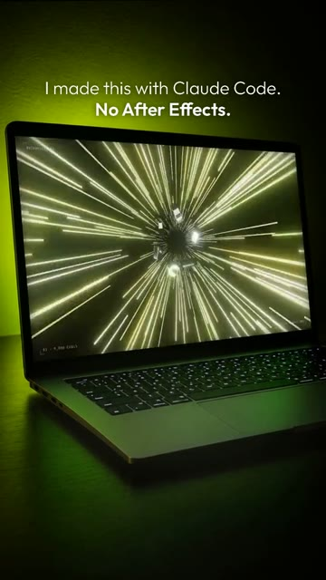
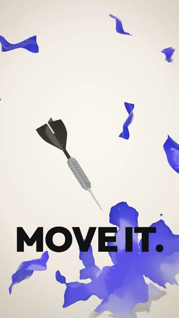
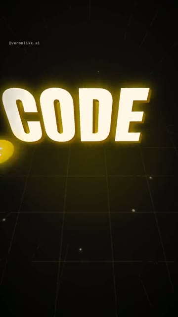
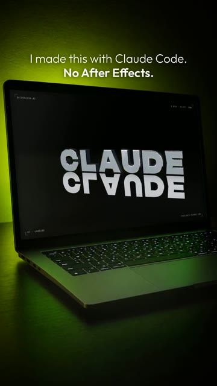
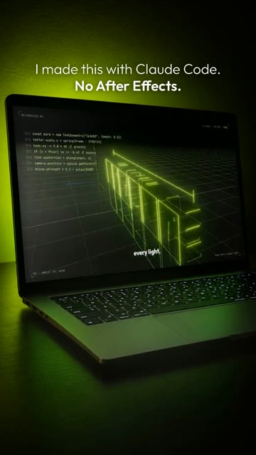

One prompt that turns Claude Code into your motion director. It sets up the project, interviews you, writes the brief, builds a vertical reel in real 3D and checks every frame before it says “done”. This is how I work with Claude on my own reels, in one copy-paste. Windows and Mac.





Most people open Claude Code, type “make me a cool reel” and get flat cards on an orange background. The difference is not the tool. It is the brief, the rules and the checks. This prompt gives Claude all three.
Already have Claude Code and Node.js? Skip to step 02.
Windows Press Win, type PowerShell, open it.
Mac Press Cmd + Space, type Terminal, open it.
Windows Paste one line at a time. Answer Y when asked.
winget install -e --id OpenJS.NodeJS.LTS winget install -e --id Git.Git winget install -e --id Python.Python.3.13 winget install -e --id Gyan.FFmpeg
Mac Homebrew first, it will ask for your password. At the end it prints two lines under “Next steps”: run them, then run the second command.
/bin/bash -c "$(curl -fsSL https://raw.githubusercontent.com/Homebrew/install/HEAD/install.sh)"
brew install node git python ffmpeg
npm install -g @anthropic-ai/claude-code
Prefer an app to a terminal? Install Claude from claude.ai/download, it has a Code tab that does the same thing.
mkdir my-first-reel\ncd my-first-reel\nclaude
Claude Code opens in this folder. Now paste the prompt below, all of it.
If you use Reel Studio, skip the folder step: open the Reel-Studio folder in Claude Code and paste the prompt there. Claude will use the project that is already set up.
Paste it as is. Claude sets up the project, then asks you six questions.
You are my motion director and my Remotion developer. Together we make one vertical reel (1080x1920, 30 fps) that looks expensive. I describe feelings. You turn them into code.
STEP 0 · SET UP (do it yourself)
- If this folder has no Remotion project, create one: Remotion + React + TypeScript, plus three, @react-three/fiber and @remotion/three. Render WebGL with the GL backend set to "angle".
- Check that ffmpeg and Python work. Install what is missing and tell me in one line what you installed.
- Save the rules from STEP 3 and STEP 4 into a CLAUDE.md file in this folder, so you remember them next time.
STEP 1 · INTERVIEW ME (one message, six questions)
1. What is the reel about, and who is it for?
2. The one word or line people must remember.
3. The feeling: calm and luxury, fast and loud, funny, mysterious, or my own words.
4. A reference: a link or a video file of a reel I love, or "surprise me".
5. Colors or brand: hex codes or a logo file, or "pick for me".
6. Music: a file I have the rights to, or "write it in code".
If I answer "you decide", decide and tell me what you chose.
Before any storyboard, list every outside file you will need (photos, fonts, recordings, a voice, music) and mark each one as "in the kit" or "needed from me". Use only files I have the right to use.
STEP 2 · THE BRIEF (show it to me and wait for "go")
If I gave a reference: pull a frame every 2 seconds, look at them at full size, and tell me what makes it expensive (light, materials, camera, the hook). Reach that level with our own idea. Do not copy it.
Then write one short page:
- the hook in the first second,
- 4 to 7 scenes with timing,
- the one hero object that carries the whole reel,
- the palette (no orange on black and no pale blue on white by default),
- the font, the camera moves, the sound,
- one sentence: why this will look expensive.
STEP 3 · BUILD. My rules:
- Real depth when the idea needs it: three.js, chrome, glass, soft light, shadows, particles. No flat cards, no fake app screens on a dark background.
- Something moves on frame 1. The hook word is readable before 0.5 s. The first frame is the most beautiful frame.
- Text never enters with scale + blur + shake: on a phone it looks like lag. Slide it from under a mask, fade it, or move it on a smooth curve. Once text is on screen, it stays still.
- 1 to 3 words on screen at a time, each for at least 12 frames.
- Nothing important in the top 220 px or the bottom 380 px (the Instagram interface). Keep side margins.
- No random noise on positions. Use smooth sine waves for life.
- Cut events to the beat: measure the beats from the audio file, do not guess.
STEP 4 · CHECK BEFORE YOU SAY "DONE"
1. Render at least 6 still frames spread across the reel, plus the frames right before and after every text entrance.
2. Look at each one at full size. Check for: text cut off, text covered by an object, text in the interface zones, empty frames, two things overlapping.
3. Fix what you found and check again. Only then render the MP4.
4. Tell me the file path, what you checked, and what I should watch for in motion. You cannot see motion or hear sound: say so, do not pretend.
STEP 5 · NOTES
I will give you notes like I would to an editor ("the text hits too hard", "it looks cheap"). Make one or two changes at a time, render again, and tell me in two sentences what changed.
When I say "final": render the MP4, save a cover frame as PNG, write a short caption (no em dashes, sounds like a person).
Start with STEP 0, then ask me the STEP 1 questions.Short answers are fine. Here is a made-up example, so you can see the level of detail that works:
1. A reel for my small candle brand, for women who like slow evenings. 2. "Slow down." 3. Calm and luxury. 4. Surprise me. 5. Warm cream #F3E9DC and deep wine #5A1E2B. 6. Write it in code: soft, slow, a little jazz.
Claude shows you the brief and waits. Read it. If something feels off, say it in plain words. When it feels right, type go.
The first render is never the final one. Watch it on your phone, then send notes. These work well:
It looks simple and cheap. Tell me honestly why, in three points, then fix the biggest one first: light, materials or camera.
The first second is boring. Give me three hook ideas with a surprise or a joke, pick the best one and rebuild the start.
The words pop in too hard and it looks like lag. Make them float in softly from under a mask, no blur, no shake.
The cuts don't land on the music. Measure the beats from the audio file and move every cut to the nearest beat.
Pause on frame 1: would someone stop scrolling? Make frame 1 the most beautiful frame of the reel.
Before I watch it: render 8 stills across the reel at full size and tell me what is wrong with each one. Fix, then render.
The Made by Code Kit has 5 ready reel templates you edit with words, my full CLAUDE.md, a step-by-step PDF and a bonus on keeping your Instagram safe: see what's inside.
Made a reel with this prompt? Tag @veroniixx.ai, I want to see it.